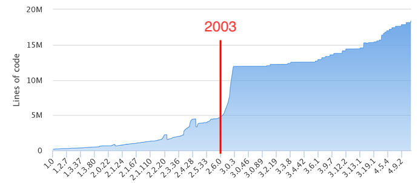

25 Aug 1991, The Birthday of Linux
Hello, everybody out there using minix – I’m doing a (free) operating system (just a hobby, won’t be big and professional like gnu) for 386(486) AT clones. This has been brewing since April, and is starting to get ready.
—— Linus Torvalds (时年 21 岁)
类似于 “我写了一个加强版的操作系统实验，现在与大家分享”
- 发布在 comp.os.minix
- 因为还依赖 Minix 的工具链 (从零开始做东西是不现实的)
- 跑的都是 GNU 的程序：gcc, bash, ...
- 从此改变世界
- “Just for fun: the story of an accidental revolutionary”


Tanenbaum/Linus "Linux is Obsolete" Debate
在 comp.os.minix 上关于 Linux 的讨论越来越多了
- Andrew Tanenbaum 做出了 “官方回应”
- 觉得 “太落后”
- Linus 完全不服气
- Ken Thompson 也参与了讨论
- 他已经在 ~10 年前获得了图灵奖……
后来大家知道的故事

- Linux 2.0 引入多处理器 (Big Kernel Lock, 内核不能并行)
- Linux 2.4 内核并行
- 2002 年才引入 Read-Copy-Update (RCU) 无锁同步
- 2003 年 Linux 2.6 发布，随云计算开始起飞